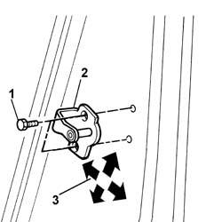

7005A10 front side door - adjust striker and adapt seal in necessary
- Path
- Procedures > 70 FITTINGS > 7005 PASSENGER COMPARTMENT FRONT SIDE DOORS > 7005A front side door assembly > 7005A10 front side door - adjust striker and adapt seal in necessary
- Kind
- repair procedure (removal / refitting; the operation number is the code)
- Applies to
- all engines; all production periods
- Interactive page
- https://sloeber94.github.io/elrnDB-fDbl/en/#/2584984
Applies to: all engines; all production periods
1. Loosen the striker retaining screws.
2. Move the striker into the correct position, using the slotted holes on the striker.
3. Permitted adjustment movements are indicated by arrows.

Applies to: all engines; all production periods
Following adjustment, tighten the lock striker screws to the specified torque.
 | Fastening | Component | Ø | Value (daNm) |
|---|---|---|---|---|
- | Bolt | STRIKER ON FRONT SIDE DOOR PILLAR | M8 | 2.4 |